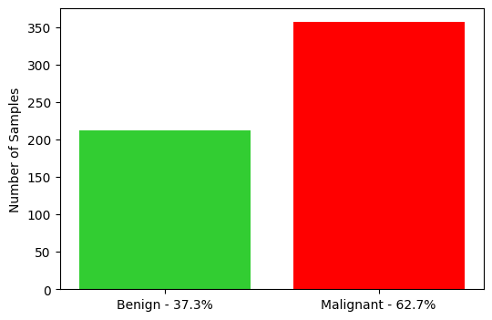
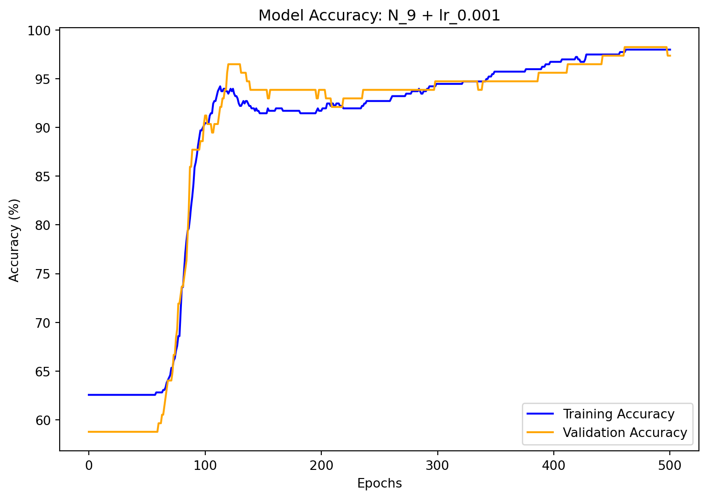
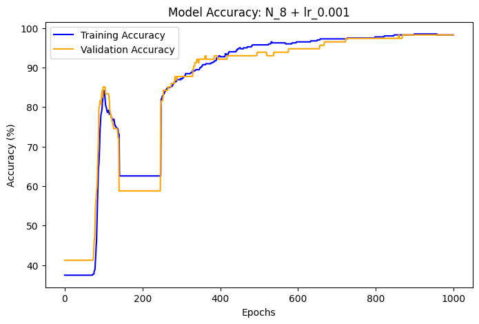
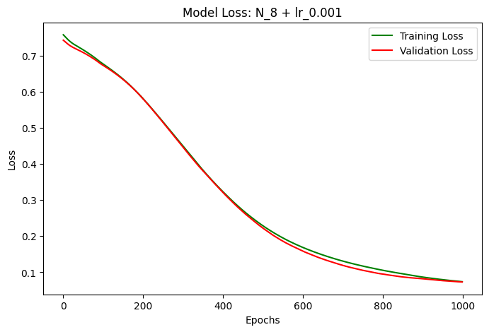
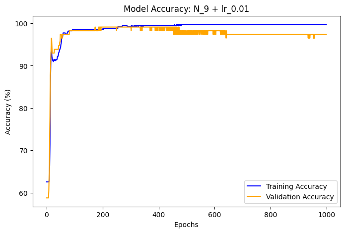
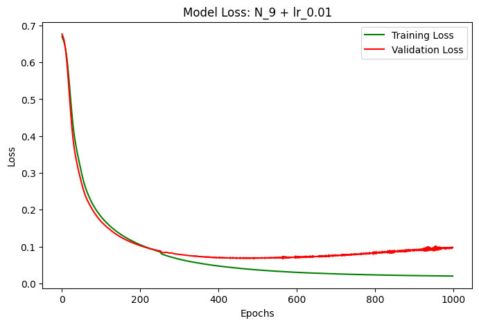

from sklearn.datasets import load_breast_cancer
dataset = load_breast_cancer()
X, y = dataset.data, dataset.target
X.shape, y.shape # 569 samples and 30 features((569, 30), (569,))Nyjil Arackal
January 30, 2025
Breast cancer is one of the most prevalent forms of cancer and early detection plays a crucial role in patient outcomes. In this project, we leverage deep learning with PyTorch to classify tumors as benign (0) or malignant (1) using the Breast Cancer Wisconsin dataset.
Through data preprocessing, neural network modeling, and performance evaluation, we create a model that achieves a 98.25% accuracy in detecting malignancies.
The Breast Cancer Wisconsin dataset is available in sklearn.datasets and contains 30 numerical features describing tumor properties.
The target variable consists of:
- 0 : Benign tumors (non-cancerous)
- 1 : Malignant tumors (cancerous)

Let’s start by loading the dataset:
from sklearn.datasets import load_breast_cancer
dataset = load_breast_cancer()
X, y = dataset.data, dataset.target
X.shape, y.shape # 569 samples and 30 features((569, 30), (569,))To visualize the data we convert it to Pandas DataFrame:
Let’s inspect a subset of the data:
| mean radius | mean texture | mean perimeter | mean area | mean smoothness | mean compactness | mean concavity | mean concave points | mean symmetry | mean fractal dimension | ... | worst texture | worst perimeter | worst area | worst smoothness | worst compactness | worst concavity | worst concave points | worst symmetry | worst fractal dimension | target | |
|---|---|---|---|---|---|---|---|---|---|---|---|---|---|---|---|---|---|---|---|---|---|
| 10 | 16.02 | 23.24 | 102.70 | 797.8 | 0.08206 | 0.06669 | 0.03299 | 0.03323 | 0.1528 | 0.05697 | ... | 33.88 | 123.80 | 1150.0 | 0.1181 | 0.1551 | 0.1459 | 0.09975 | 0.2948 | 0.08452 | 0 |
| 11 | 15.78 | 17.89 | 103.60 | 781.0 | 0.09710 | 0.12920 | 0.09954 | 0.06606 | 0.1842 | 0.06082 | ... | 27.28 | 136.50 | 1299.0 | 0.1396 | 0.5609 | 0.3965 | 0.18100 | 0.3792 | 0.10480 | 0 |
| 12 | 19.17 | 24.80 | 132.40 | 1123.0 | 0.09740 | 0.24580 | 0.20650 | 0.11180 | 0.2397 | 0.07800 | ... | 29.94 | 151.70 | 1332.0 | 0.1037 | 0.3903 | 0.3639 | 0.17670 | 0.3176 | 0.10230 | 0 |
| 13 | 15.85 | 23.95 | 103.70 | 782.7 | 0.08401 | 0.10020 | 0.09938 | 0.05364 | 0.1847 | 0.05338 | ... | 27.66 | 112.00 | 876.5 | 0.1131 | 0.1924 | 0.2322 | 0.11190 | 0.2809 | 0.06287 | 0 |
| 14 | 13.73 | 22.61 | 93.60 | 578.3 | 0.11310 | 0.22930 | 0.21280 | 0.08025 | 0.2069 | 0.07682 | ... | 32.01 | 108.80 | 697.7 | 0.1651 | 0.7725 | 0.6943 | 0.22080 | 0.3596 | 0.14310 | 0 |
| 15 | 14.54 | 27.54 | 96.73 | 658.8 | 0.11390 | 0.15950 | 0.16390 | 0.07364 | 0.2303 | 0.07077 | ... | 37.13 | 124.10 | 943.2 | 0.1678 | 0.6577 | 0.7026 | 0.17120 | 0.4218 | 0.13410 | 0 |
| 16 | 14.68 | 20.13 | 94.74 | 684.5 | 0.09867 | 0.07200 | 0.07395 | 0.05259 | 0.1586 | 0.05922 | ... | 30.88 | 123.40 | 1138.0 | 0.1464 | 0.1871 | 0.2914 | 0.16090 | 0.3029 | 0.08216 | 0 |
| 17 | 16.13 | 20.68 | 108.10 | 798.8 | 0.11700 | 0.20220 | 0.17220 | 0.10280 | 0.2164 | 0.07356 | ... | 31.48 | 136.80 | 1315.0 | 0.1789 | 0.4233 | 0.4784 | 0.20730 | 0.3706 | 0.11420 | 0 |
| 18 | 19.81 | 22.15 | 130.00 | 1260.0 | 0.09831 | 0.10270 | 0.14790 | 0.09498 | 0.1582 | 0.05395 | ... | 30.88 | 186.80 | 2398.0 | 0.1512 | 0.3150 | 0.5372 | 0.23880 | 0.2768 | 0.07615 | 0 |
| 19 | 13.54 | 14.36 | 87.46 | 566.3 | 0.09779 | 0.08129 | 0.06664 | 0.04781 | 0.1885 | 0.05766 | ... | 19.26 | 99.70 | 711.2 | 0.1440 | 0.1773 | 0.2390 | 0.12880 | 0.2977 | 0.07259 | 1 |
| 20 | 13.08 | 15.71 | 85.63 | 520.0 | 0.10750 | 0.12700 | 0.04568 | 0.03110 | 0.1967 | 0.06811 | ... | 20.49 | 96.09 | 630.5 | 0.1312 | 0.2776 | 0.1890 | 0.07283 | 0.3184 | 0.08183 | 1 |
11 rows × 31 columns
Splitting into training (70%), validation (20%) and test (10%) sets:
To improve model training performance, we normalize the features using MinMaxScaler:
import torch
X_train, y_train = torch.tensor(X_train, dtype=torch.float32), torch.tensor(y_train, dtype=torch.float32)
X_valid, y_valid = torch.tensor(X_valid, dtype=torch.float32), torch.tensor(y_valid, dtype=torch.float32)
X_test, y_test = torch.tensor(X_test, dtype=torch.float32), torch.tensor(y_test, dtype=torch.float32)
X_train.shape, X_valid.shape, X_test.shape # sets: 398 training, 114 validation, 57 test(torch.Size([398, 30]), torch.Size([114, 30]), torch.Size([57, 30]))Creating the Model Class:
from torch import nn
torch.manual_seed(42)
IN_FEATURES = X.shape[1] # 30
OUT_FEATURES = 9 # number of neurons in the hidden layers
OUTPUT = 1 # benign or malignant
class BreastCancerModel(nn.Module):
def __init__(self):
super().__init__()
self.linear_layer_stack = nn.Sequential(
nn.Linear(IN_FEATURES, OUT_FEATURES),
nn.ReLU(),
nn.Linear(OUT_FEATURES, OUT_FEATURES),
nn.ReLU(),
nn.Linear(OUT_FEATURES, OUTPUT)
)
def forward(self, x):
return self.linear_layer_stack(x)Setting up the Model:
Moving data to GPU (if available):
torch.manual_seed(42)
epochs = 500
# creating lists to track results
train_losses = []
valid_losses = []
train_accuracies = []
valid_accuracies = []
for epoch in range(epochs + 1):
BC_Model_V0.train()
y_logits = BC_Model_V0(X_train).squeeze()
y_pred = torch.round(torch.sigmoid(y_logits))
loss = loss_fn(y_logits, y_train) # BCEWithLogitsLoss calculates loss using logits
acc = accuracy_fn(y_true=y_train,
y_pred=y_pred)
train_losses.append(loss.item())
train_accuracies.append(acc)
optimizer.zero_grad() # resetting gradients
loss.backward() # calculating gradients of loss_fn
optimizer.step() # updating parameters
BC_Model_V0.eval()
with torch.inference_mode():
valid_logits = BC_Model_V0(X_valid).squeeze()
valid_pred = torch.round(torch.sigmoid(valid_logits))
valid_loss = loss_fn(valid_logits, y_valid)
valid_acc = accuracy_fn(y_true=y_valid,
y_pred=valid_pred)
valid_losses.append(valid_loss.item())
valid_accuracies.append(valid_acc)
if (epoch % 50 == 0 or epoch == 500):
print(f"Epoch: {epoch:3n} | Loss: {loss:.5f}, Accuracy: {acc:.2f}% | Validation Loss: {valid_loss:.5f}, Validation Accuracy: {valid_acc:.2f}%")Epoch: 0 | Loss: 0.67050, Accuracy: 62.56% | Validation Loss: 0.67903, Validation Accuracy: 58.77%
Epoch: 50 | Loss: 0.64968, Accuracy: 62.56% | Validation Loss: 0.65634, Validation Accuracy: 58.77%
Epoch: 100 | Loss: 0.59179, Accuracy: 90.45% | Validation Loss: 0.58440, Validation Accuracy: 91.23%
Epoch: 150 | Loss: 0.50392, Accuracy: 91.46% | Validation Loss: 0.48118, Validation Accuracy: 93.86%
Epoch: 200 | Loss: 0.39520, Accuracy: 91.71% | Validation Loss: 0.36400, Validation Accuracy: 93.86%
Epoch: 250 | Loss: 0.28975, Accuracy: 92.71% | Validation Loss: 0.25866, Validation Accuracy: 93.86%
Epoch: 300 | Loss: 0.22007, Accuracy: 94.47% | Validation Loss: 0.19206, Validation Accuracy: 94.74%
Epoch: 350 | Loss: 0.17563, Accuracy: 95.73% | Validation Loss: 0.14957, Validation Accuracy: 94.74%
Epoch: 400 | Loss: 0.14461, Accuracy: 96.73% | Validation Loss: 0.11993, Validation Accuracy: 95.61%
Epoch: 450 | Loss: 0.12219, Accuracy: 97.49% | Validation Loss: 0.09963, Validation Accuracy: 97.37%
Epoch: 500 | Loss: 0.10571, Accuracy: 97.99% | Validation Loss: 0.08593, Validation Accuracy: 97.37%Let’s plot the Accuracy and the Loss functions.
The Accuracy:
import matplotlib.pyplot as plt
plt.figure(figsize=(9, 6))
plt.plot(train_accuracies, label="Training Accuracy", color='blue')
plt.plot(valid_accuracies, label="Validation Accuracy", color='orange')
plt.xlabel("Epochs")
plt.ylabel("Accuracy (%)")
plt.title("Model Accuracy: N_9 + lr_0.001")
plt.legend()
plt.show()
The Loss:
Let’s use the final 10% of the samples to see how the model performs on unseen data:
To optimize the model’s performance, I experimented with different hyperparameters values:




This post highlights the applications of machine learning in medicine, demonstrating how deep learning can assist in early breast cancer detection. While this model is relatively simple, it serves as a great example of binary classification, where the goal is to distinguish between two categories: benign and malignant tumors.
Even though the model achieves a high accuracy of 98.25%, there are several ways to improve, such as:
- Hyperparameter tuning: optimizing learning rates, batch sizes (if using a larger dataset) and architectures for better performance.
- Using more complex models: implementing Convolutional Neural Networks (CNNs) for image-based cancer detection.
- Expanding the dataset: including more diverse patient demographics to improve real-world generalization.
As machine learning continues to evolve, models like this can contribute to early disease detection, improving patient outcomes and supporting medical professionals in their decision-making.
MIT License
Copyright (c) 2021 Daniel Bourke
Permission is hereby granted, free of charge, to any person obtaining a copy of this software and associated documentation files (the “Software”), to deal in the Software without restriction, including without limitation the rights to use, copy, modify, merge, publish, distribute, sublicense, and/or sell copies of the Software, and to permit persons to whom the Software is furnished to do so, subject to the following conditions:
The above copyright notice and this permission notice shall be included in all copies or substantial portions of the Software.
THE SOFTWARE IS PROVIDED “AS IS”, WITHOUT WARRANTY OF ANY KIND, EXPRESS OR IMPLIED, INCLUDING BUT NOT LIMITED TO THE WARRANTIES OF MERCHANTABILITY, FITNESS FOR A PARTICULAR PURPOSE AND NONINFRINGEMENT. IN NO EVENT SHALL THE AUTHORS OR COPYRIGHT HOLDERS BE LIABLE FOR ANY CLAIM, DAMAGES OR OTHER LIABILITY, WHETHER IN AN ACTION OF CONTRACT, TORT OR OTHERWISE, ARISING FROM, OUT OF OR IN CONNECTION WITH THE SOFTWARE OR THE USE OR OTHER DEALINGS IN THE SOFTWARE.